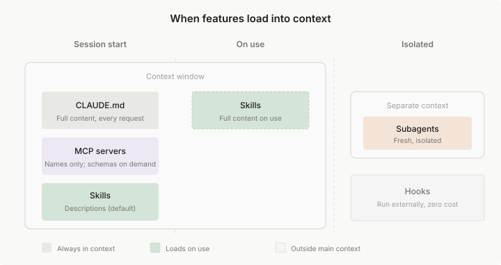

扩展 Claude Code
Table of Contents
了解何时使用 CLAUDE.md、Skills、subagents、hooks、MCP 和 plugins
Claude Code 结合了一个能够推理代码的模型和内置工具，用于文件操作、搜索、执行和网络访问。内置工具涵盖了大多数编码任务
本指南涵盖扩展层：您添加的功能，用于自定义 Claude 的知识、将其连接到外部服务以及自动化工作流
初次使用 Claude Code？ 从 CLAUDE.md 开始了解项目约定，然后根据需要添加其他扩展当特定触发器出现时
概述
扩展插入代理循环的不同部分：
- CLAUDE.md 添加 Claude 每个 会话 都能看到的 持久上下文
- Skills 添加 可重用 的 知识 和 可调用 的 工作流
- 代码智能 将 Claude 连接到 语言服务器 ，用于符号级导航和实时类型错误
- MCP 将 Claude 连接到 外部服务和工具
- Subagents 在 隔离的上下文 中运行自己的循环，返回 摘要
- Agent teams 协调 多个独立 会话 ，具有 共享任务 和 点对点消息传递
- Hooks 在 生命周期事件 上触发，可以运行 脚本 、 HTTP 请求 、 提示 或 subagent
- Plugins 和 marketplaces 打包和分发这些功能
Skills 是 最灵活 的扩展
- Skill 是一个包含 知识 、 工作流 或 说明 的 markdown 文件
- 可以使用 /deploy 之类的命令调用 skills，或者 Claude 可以在相关时自动加载它们
- Skills 可以在当前的对话中运行，也可以通过 subagents 在隔离的上下文中运行
将功能与您的目标相匹配
功能范围从
- Claude 每个会话都能看到的始终开启的上下文
- 您或 Claude 可以调用的按需功能
- 在特定事件上运行的后台自动化
下表显示了可用的功能以及何时使用每个功能：
| 功能 | 作用 | 何时使用 | 示例 |
| CLAUDE.md | 每次对话加载的持久上下文 | 项目约定、“始终执行 X” 规则 | ”使用 pnpm，而不是 npm。提交前运行测试。“ |
| Skill | Claude 可以使用的说明、知识和工作流 | 可重用内容、参考文档、可重复的任务 | /deploy 运行您的部署清单；包含端点模式的 API 文档 skill |
| Subagent | 返回摘要结果的隔离执行上下文 | 上下文隔离、并行任务、专门的工作者 | 读取许多文件但仅返回关键发现的研究任务 |
| Agent teams | 协调多个独立的 Claude Code 会话 | 并行研究、新功能开发、使用竞争假设进行调试 | 生成审查者同时检查安全性、性能和测试 |
| Code intelligence | 语言服务器导航和诊断 | 类型化语言、大型代码库（其中 grep 速度慢或不精确） | 跳转到符号的定义，而不是读取整个文件 |
| MCP | 连接到外部服务 | 外部数据或操作 | 查询您的数据库、发布到 Slack、控制浏览器 |
| Hook | 由事件触发的脚本、HTTP 请求、提示或 subagent | 必须在每个匹配事件上运行的自动化 | 每次文件编辑后运行 ESLint |
| Artifact | 将会话输出发布为私有、交互式网页 | 您想以视觉方式查看或共享的输出，而不是作为终端文本 | 一个在 Claude 调查时更新的事件时间线 |
Plugins 是打包层
- Plugin 将 skills、hooks、subagents 和 MCP servers 捆绑到单个可安装单元中
- Plugin skills 是命名空间的（如 /my-plugin:review ），因此多个 plugins 可以共存
当想在多个存储库中重用相同的设置或通过 marketplace 分发给他人时，使用 plugins
随时间推移构建您的设置
不需要提前配置所有内容。每个功能都有一个可识别的触发器，大多数团队大致按以下顺序添加它们：
| 触发器 | 添加 |
| Claude 两次出错约定或命令 | 将其添加到 CLAUDE.md |
| 您一直在输入相同的提示来启动任务 | 将其保存为用户可调用的 skill |
| 您第三次将相同的剧本或多步骤过程粘贴到聊天中 | 将其捕获为 skill |
| 您一直在从 Claude 看不到的浏览器标签页复制数据 | 将该系统连接为 MCP server |
| Claude 读取许多文件以查找符号的定义或使用位置 | 为您的语言安装 code intelligence plugin |
| 一个辅助任务用您不会再次引用的输出淹没您的对话 | 通过 subagent 路由它 |
| 您希望每次都发生某事而无需询问 | 编写 hook |
| 第二个存储库需要相同的设置 | 将其打包为 plugin |
相同的触发器告诉您何时更新您已有的内容
- 重复的错误或反复出现的审查评论是 CLAUDE.md 编辑，而不是聊天中的一次性更正
- 一直手动调整的工作流是需要另一次修订的 skill
比较相似的功能
某些功能可能看起来相似。以下是如何区分它们
Skill vs Subagent
Skills 和 subagents 解决不同的问题：
- Skills 是可重用的内容，可以将其加载到任何上下文中
- Subagents 是与主对话分开运行的隔离工作者
| 方面 | Skill | Subagent |
| 它是什么 | 可重用的说明、知识或工作流 | 具有自己上下文的隔离工作者 |
| 关键优势 | 在上下文之间共享内容 | 上下文隔离。工作单独进行，仅返回摘要 |
| 上下文窗口影响 | 添加到您的主窗口 | 使用具有自己输入和输出令牌的单独窗口 |
| 最适合 | 参考材料、可调用的工作流 | 读取许多文件的任务、并行工作、专门的工作者 |
Skills 可以是参考或操作
参考 skills 提供 Claude 在整个会话中使用的知识
如您的 API 风格指南
操作 skills 告诉 Claude 执行特定操作
如运行您的部署工作流的 /deploy
当需要 上下文隔离或上下文窗口变满 时，使用 subagent
- Subagent 可能读取数十个文件或运行广泛的搜索，但主对话仅接收摘要
- 由于 subagent 工作不消耗您的主上下文，当您不需要中间工作保持可见时，这也很有用
- 自定义 subagents 可以有自己的说明并可以预加载 skills
它们可以结合
- Subagent 可以预加载特定的 skills skills: 字段
- Skill 可以使用 context: fork 在隔离的上下文中运行
CLAUDE.md vs Skill
两者都存储说明，但它们的加载方式和用途不同
| 方面 | CLAUDE.md | Skill |
| 加载 | 每个会话，自动 | 按需 |
| 可以包含文件 | 是，使用 @path 导入 | 是，使用 @path 导入 |
| 可以触发工作流 | 否 | 是，使用 /<name> |
| 最适合 | ”始终执行 X” 规则 | 参考材料、可调用的工作流 |
如果 Claude 应该始终知道它，请将其放在 CLAUDE.md 中
编码约定、构建命令、项目结构、“永远不要执行 X” 规则
如果它是 Claude 有时需要的参考材料（API 文档、风格指南）或使用 /<name> 触发的工作流（部署、审查、发布），请将其放在 skill 中
经验法则： 保持 CLAUDE.md 在 200 行以下 如果它在增长，将参考内容移到 skills 或拆分为 .claude/rules/ 文件
CLAUDE.md vs Rules vs Skills
所有三者都存储说明，但它们的加载方式不同：
| 方面 | CLAUDE.md | .claude/rules/ | Skill |
| 加载 | 每个会话 | 每个会话，或当打开匹配的文件时 | 按需，当调用或相关时 |
| 范围 | 整个项目 | 可以限定到文件路径 | 特定于任务 |
| 最适合 | 核心约定和构建命令 | 特定于语言或目录的指南 | 参考材料、可重复的工作流 |
对于每个会话需要的说明，使用 CLAUDE.md
构建命令、测试约定、项目架构
使用 rules 来保持 CLAUDE.md 专注
带有 paths frontmatter 的 rules 仅在 Claude 处理匹配文件时加载，节省上下文
对于 Claude 有时只需要的内容，使用 skills
如 API 文档或使用 /<name> 触发的部署清单
Subagent vs Agent team
两者都并行化工作，但它们在架构上不同：
- Subagents 在会话内运行并将结果报告回您的主上下文
- Agent teams 是相互通信的独立 Claude Code 会话
| 方面 | Subagent | Agent team |
| 上下文 | 自己的上下文窗口；结果返回给调用者 | 自己的上下文窗口；完全独立 |
| 通信 | 仅向主代理报告结果 | 队友直接相互发送消息 |
| 协调 | 主代理管理所有工作 | 具有自我协调的共享任务列表 |
| 最适合 | 仅结果重要的专注任务 | 需要讨论和协作的复杂工作 |
| 令牌成本 | 较低：结果摘要返回到主上下文 | 较高：每个队友是一个单独的 Claude 实例 |
当您需要一个快速、专注的工作者时，使用 subagent
研究一个问题、验证一个声明、审查一个文件 Subagent 完成工作并返回摘要。您的主对话保持清洁
当队友需要共享发现、相互质疑和独立协调时，使用 agent team
Agent teams 最适合具有竞争假设的研究、并行代码审查以及每个队友拥有单独部分的新功能开发
过渡点：如果运行并行 subagents 但遇到上下文限制，或者 subagents 需要相互通信，agent teams 是自然的下一步
MCP vs Skill
MCP 将 Claude 连接到外部服务。Skills 扩展 Claude 的知识，包括如何有效地使用这些服务
| 方面 | MCP | Skill |
| 它是什么 | 连接到外部服务的协议 | 知识、工作流和参考材料 |
| 提供 | 工具和数据访问 | 知识、工作流、参考材料 |
| 示例 | Slack 集成、数据库查询、浏览器控制 | 代码审查清单、部署工作流、API 风格指南 |
这些解决不同的问题，可以很好地协同工作：
- MCP: 给予 Claude 与外部系统交互的目的构建的工具，连接和身份验证由服务器处理
- Skills: 给予 Claude 关于如何有效使用这些工具的知识，以及可以使用 /<name> 触发的工作流
- Skill 可能包括您团队的数据库架构和查询模式
- 或带有您团队消息格式规则的 /post-to-slack 工作流
示例：MCP 服务器将 Claude 连接到您的数据库 Skill 教导 Claude 您的数据模型、常见查询模式以及用于不同任务的表
Hook vs Skill
Hook 在生命周期事件上触发；skill 被加载到上下文中供 Claude 应用
| 方面 | Hook | Skill |
| 运行 | Shell 命令、HTTP 请求、LLM 提示或 subagent | Claude 读取和遵循的说明 |
| 由以下触发 | 生命周期事件，如 PostToolUse 或 SessionStart | 输入 /<name>，或 Claude 将描述与您的任务相匹配 |
| 确定性 | 总是在其事件上触发；触发器是有保证的 | Claude 解释说明；结果可能会有所不同 |
| 上下文成本 | 零，除非 hook 返回输出 | 描述在每个会话加载；使用时加载完整内容 |
| 最适合 | 每次都以相同方式运行且不需要 Claude 思考的操作 | 需要推理的工作流、参考材料、多步骤任务 |
当操作必须每次都以相同方式发生且不需要 Claude 思考时，使用 hook
例如：保存时格式化、拒绝 rm -rf /、在会话结束时发布 Slack 消息
当 Claude 应该决定如何应用步骤或内容是知识而不是脚本时，使用 skill
例如：/release 清单、您的 API 风格指南、调试剧本
将防御步骤放在 hooks 中
CLAUDE.md 或 skill 中的”永远不要编辑 .env”之类的说明是请求，而不是保证 阻止编辑的 PreToolUse hook 是强制执行 如果规则必须每次都成立，将其作为 hook 而不是提示说明
Hook 输出进入上下文
运行您的 linter 的 PostToolUse hook 将结果作为 Claude 读取的文本反馈 /fix-lint skill 告诉 Claude 如何解决它们
功能如何分层
功能可以在多个级别定义：用户范围、每个项目、通过 plugins 或通过托管策略 还可以在子目录中嵌套 CLAUDE.md 文件或在 monorepo 的特定包中放置 skills
当相同的功能存在于多个级别时，以下是它们的分层方式：
- CLAUDE.md 文件 是 累加 的：所有级别同时向 Claude 的上下文贡献内容
- 来自工作目录及以上的文件在启动时加载
- 子目录在其中工作时加载
当说明冲突时，Claude 使用判断来协调它们，更具体的说明通常优先
有关详细信息，请参阅 CLAUDE.md 文件如何加载 https://code.claude.com/docs/zh-CN/memory#how-claude-md-files-load
- Skills 和 subagents 按 名称 覆盖：当相同的名称存在于多个级别时，一个定义根据 优先级 获胜
- 对于 skills 为托管 > 用户 > 项目
对于 subagents 为托管 > CLI 标志 > 项目 > 用户 > plugin
Plugin skills 是 命名空间的 以避免冲突 有关详细信息，请参阅 skill 发现 和 subagent 范围 https://code.claude.com/docs/zh-CN/skills#where-skills-live https://code.claude.com/docs/zh-CN/sub-agents#choose-the-subagent-scope
MCP 服务器 按 名称 覆盖：本地 > 项目 > 用户
有关详细信息，请参阅 MCP 范围 https://code.claude.com/docs/zh-CN/mcp#scope-hierarchy-and-precedence
Hooks 合并：所有注册的 hooks 为其匹配的事件触发，无论来源如何
有关详细信息，请参阅 hooks https://code.claude.com/docs/zh-CN/hooks-guide
组合功能
每个扩展解决不同的问题：
- CLAUDE.md 处理始终开启的上下文
- skills 处理按需知识和工作流
- MCP 处理外部连接
- subagents 处理隔离
- hooks 处理自动化
真实的设置根据工作流组合它们:
| 模式 | 工作原理 | 示例 |
| Skill + MCP | MCP 提供连接；skill 教导 Claude 如何很好地使用它 | MCP 连接到您的数据库，skill 记录您的架构和查询模式 |
| Skill + Subagent | Skill 为并行工作生成 subagents | /audit skill 启动在隔离上下文中工作的安全性、性能和风格 subagents |
| CLAUDE.md + Skills | CLAUDE.md 保存始终开启的规则；skills 保存按需加载的参考材料 | CLAUDE.md 说”遵循我们的 API 约定”，skill 包含完整的 API 风格指南 |
| Hook + MCP | Hook 通过 MCP 触发外部操作 | 编辑后 hook 在 Claude 修改关键文件时发送 Slack 通知 |
例如，可使用 CLAUDE.md 处理项目约定 使用 skill 处理部署工作流 使用 MCP 连接到数据库 使用 hook 在每次编辑后运行 linting 每个功能处理它最擅长的事情
上下文成本
添加的每个功能都会消耗 Claude 的一些上下文。太多可能会填满您的上下文窗口，但它也可能增加噪音，使 Claude 效率降低；skills 可能无法正确触发，或 Claude 可能会失去对您的约定的跟踪
了解这些权衡有助于构建有效的设置 有关这些功能如何在运行会话中组合的交互式视图，请参阅 探索上下文窗口 https://code.claude.com/docs/zh-CN/context-window
按功能的上下文成本
每个功能都有不同的加载策略和上下文成本：
| 功能 | 何时加载 | 加载内容 | 上下文成本 |
| CLAUDE.md | 会话开始 | 完整内容 | 每个请求 |
| Skills | 会话开始 + 使用时 | 启动时的描述，使用时的完整内容 | 低（每个请求的描述） |
| MCP 服务器 | 会话开始 | 工具名称；完整架构按需 | 低，直到使用工具 |
| Code intelligence | 文件编辑后和按需 | 编辑后的诊断；符号查找时的位置信息 | 低；减少其他地方的文件读取 |
| Subagents | 生成时 | 具有指定 skills 的新鲜上下文 | 与主会话隔离 |
| Hooks | 触发时 | 无（外部运行） | 零，除非 hook 返回额外上下文 |
默认情况下，skill 描述在会话开始时加载，以便 Claude 可以决定何时使用它们
在 skill 的 frontmatter 中设置 disable-model-invocation: true 以将其完全隐藏在 Claude 中，直到手动调用它
这将 skills 的上下文成本降低到零，您只需自己触发这些 skills
- 对于未编写的 skill，在设置中设置 skillOverrides 以在不编辑其文件的情况下执行相同操作
功能如何加载
每个功能在会话的不同点加载。下面解释了每个功能何时加载以及什么进入上下文

Claude.md
- 何时： 会话开始
- 加载内容： 所有 CLAUDE.md 文件的完整内容（托管、用户和项目级别）
继承： Claude 从工作目录读取 CLAUDE.md 文件直到根目录，并在访问这些文件时发现子目录中的嵌套文件
有关详细信息，请参阅 CLAUDE.md 文件如何加载 https://code.claude.com/docs/zh-CN/memory#how-claude-md-files-load
Skills
Skills 是 Claude 工具包中的额外功能。它们可以是参考材料（如 API 风格指南）或可调用的工作流，可以使用 /<name> 触发（如 /deploy）
Claude Code 包括 捆绑的 skills，如 /code-review、/batch 和 /debug，可以开箱即用 也可以创建自己的
Claude 在 适当时 使用 skills，或者可以直接调用一个
- 何时： 取决于 skill 的配置
- 默认情况下，描述在会话开始时加载，完整内容在使用时加载
- 对于仅用户 skills（disable-model-invocation: true），在调用它们之前不加载任何内容
- 加载内容： 对于模型可调用的 skills，Claude 在每个请求中看到名称和描述。当您使用 /<name> 调用 skill 或 Claude 自动加载它时，完整内容加载到您的对话中。
Claude 如何选择 skills： Claude 将任务与 skill 描述相匹配，以决定哪些相关
如果描述模糊或重叠，Claude 可能加载错误的 skill 或错过会有帮助的 skill
- 要告诉 Claude 使用特定的 skill，请使用 /<name> 调用它
- 带有 disable-model-invocation: true 的 Skills 对 Claude 不可见，直到您调用它们
- 要告诉 Claude 使用特定的 skill，请使用 /<name> 调用它
- 上下文成本： 低，直到使用。仅用户 skills 在调用前成本为零
在 subagents 中： Skills 在 subagents 中的工作方式不同。不是按需加载，而是在 subagent 的 skills 字段中列出的 skills 在启动时完全预加载到其上下文中
Subagents 仍然可以通过 Skill 工具发现和调用未列出的项目、用户和插件 skills
MCP
- 何时： 会话开始
- 加载内容： 来自连接的服务器的工具名称。完整的 JSON 架构保持延迟，直到 Claude 需要特定工具
- 上下文成本： 工具搜索默认启用，因此空闲 MCP 工具消耗最少的上下文
Code intelligence
- 何时： 文件编辑后，以及当 Claude 导航代码时按需
- 加载内容： 每次文件编辑后的类型错误和警告。当 Claude 查找符号时的定义、引用和类型信息
- 上下文成本： 低。符号查找通常替代广泛的文件读取，因此净上下文使用可能会下降
Subagents
- 何时： 按需，当您或 Claude 为任务生成一个时
- 加载内容： 新鲜、隔离的上下文，包含：
- agent 的自己的系统提示，而不是完整的 Claude Code 系统提示
- agent 的 skills: 字段中列出的 skills 的完整内容
- CLAUDE.md 和 git 状态，除了内置的 Explore 和 Plan agents 省略两者
- 主 agent 在提示中传递的任何上下文
- 上下文成本： 与主会话隔离。Subagents 不继承对话历史或调用的 skills
Hooks
何时： 触发时。Hooks 在特定的生命周期事件上触发
如工具执行、会话边界、提示提交、权限请求和压缩 有关完整列表，请参阅 Hooks https://code.claude.com/docs/zh-CN/hooks
- 加载内容： 默认情况下无。Hooks 在主对话外执行
- 上下文成本： 零，除非 hook 返回作为消息添加到您的对话中的输出
| Next: Claude 配置 | Previous：工作原理 | Home: 核心概念 |